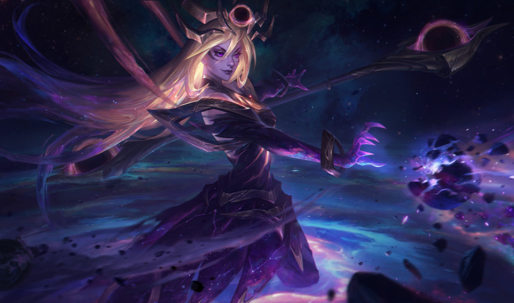

<!DOCTYPE html>
<html>
    <head>
    <title>Luxanna</title>
    <link rel="stylesheet" type="text/css" href="css/hero.css">
</head>
</html>
<body>
    <div class="wrapper">
        <header>
            
            <h1>Luxana from League of Legends</h1>
        </header>

    </div>
</body>
<div class="content">
    <h2>About Lux</h2>
    <p>Luxanna Crownguard hails from Demacia, an insular realm where magical abilities are viewed with fear and suspicion. Able to bend light to her will, she grew up dreading discovery and exile, and was forced to keep her power secret, in order to preserve her family's noble status. Nonetheless, Lux's optimism and resilience have led her to embrace her unique talents, and she now covertly wields them in service of her homeland.</p>
<h2>Luxanna's abilities</h2>
<ol>
    <li><b>Illumination</b><br>INNATE: Lux's damaging abilities mark enemies with light energy for 6 seconds.

        Lux's basic attacks and Final Spark Final Spark consume the mark to deal 20 − 190 (based on level) (+ 20% AP) bonus magic damage.</li>
    <li><b>Light Binding</b><br>ACTIVE: Lux releases a sphere of light in the target direction that deals magic damage to the first two enemies hit and Root icon.png roots them for 2 seconds.</li>
    <li><b>Prismatic Barrier</b><br>Lux and allied Champion icon.png champions touched by the outgoing wand are Hybrid resistances icon.png shielded for 2.5 seconds.</li>
<li><b>Lucent Singularity</b><br>ACTIVE: Lux sends an anomaly of twisted light to the target area for up to 5 seconds, Slow icon.png slowing enemies inside and granting a 600 radius Sight icon.png vision around it. Lucent Singularity can be recast at no delay.</li>
<li><b>Final Spark</b><br>ACTIVE: Lux fires a massive laser of light in a line in the target direction that deals magic damage to all enemies hit, briefly Sight icon.png revealing enemies as well as the surrounding area</li></ol>
    
    <p class="captions">This is Lux in actions</p>
    <h2>Lux's friends</h2>
    <ul>
        <li><a href="https://leagueoflegends.fandom.com/wiki/LeBlanc" target="_blank" title="visit LeBlanc's page">LeBlanc</a></li>
        <li><a href="https://leagueoflegends.fandom.com/wiki/Thresh" target="_blank" title= "visit Thresh's page">Thresh</a></li>
        <li><a href="https://leagueoflegends.fandom.com/wiki/Ashe" target="_blank" title="visit Ashe's page">Ashe</a></li>
    </ul>
    <div>
        <footer>
            <ul>
                <li>Made by <a href="https://leagueoflegends.fandom.com/wiki/Zoe" target="_bank" title="visit Joanna's website">Joanna</a></li>
                <li><a href="https://skillshare.com" target="_blank">Learne from Skillshare</a></li>
            </ul>
        </footer>
    </div>

</div>
